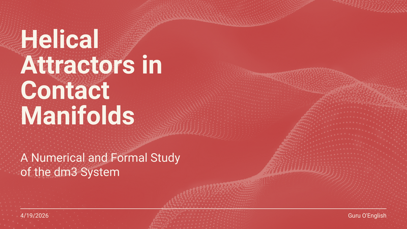

A EDO vive em (M, ξ) = (ℝ³, ker α) em coordenadas cilíndricas, com ε = 2 fixo: ṙ = r(1−r²) + ε(r−1)e−z, θ̇ = 1, ż = r² − ε(r−1)²e−z O conjunto-limite é uma hélice Γ sobre o cilindro unitário r = 1. A não-integrabilidade de ξ (Frobenius falha: α ∧ dα ≠ 0) obstrui órbitas planas: qualquer limite periódico do fluxo transporta z, tornando-se helicoidal em 3D.
Pré-requisitos: EDO de graduação. Lean 4 não é assumido. Cada sessão é independente e abre no navegador — sem instalação.
O mesmo material do Capítulo 10 foi submetido em cinco categorias da Bienal. Todos os PDFs são gratuitos e estão neste repositório.
| Categoria | Eixo | Arquivo | Descrição |
|---|---|---|---|
| Minicurso | T1 | XII_BM_MINICURSO_T1_Pablo_Grossi_preview.pdf | Prévia de 3 páginas PT/EN — Belos Problemas. Sistema dm³, Teorema 2.1, r★ ≈ 0,80. |
| Minicurso v3 | T1 | MC_T1_Pablo_Grossi_v3.pdf | Versão revisada do minicurso com sessões S1–S3 completas. |
| Pôster | T10 | PO_10_Pablo_Grossi.pdf | Geometria e Topologia — pôster com Teorema 2.1 e bacia assimétrica. |
| Comunicação Oral | T2 | CO_T2_Pablo_Grossi.pdf | História da Matemática — apresentação oral sobre a correção da bacia de Gronwall. |
| Oficina | T2 | OF_T2_Pablo_Grossi.pdf | Oficina prática: integração numérica DOP853 e visualização do atrator. |
Eixos temáticos: T1 = Belos Problemas e Belas Soluções · T2 = História da Matemática · T10 = Geometria e Topologia.
Esta seção lista tudo. Se você não sabe por onde começar, leia a Sessão S1 em português ou baixe a prévia do minicurso (PDF).
O Volume IV é a Edição Formal — enxuta, numericamente rigorosa, verificada em Lean 4. Desenhado para ser lido em uma semana, ensinado em três horas.
| Vol | Título | ISBN / DOI |
|---|---|---|
| G¹ | O Arcabouço de Operadores Ortogonais | 979-8-9954416-2-5 |
| G² | TOGT: Aplicações Através de Domínios | 979-8-9954416-4-9 |
| G³ | A Mini-Besta: Instanciações Biológicas | 979-8-9954416-6-3 |
| G⁴ | Atratores Helicoidais em 3-Variedades de Contato · GTCT T1 — Edição Formal (este volume) | 10.5281/zenodo.19379385 |
| G⁵ | A Semente — Completude Completa | 979-8-9954416-5-6 |